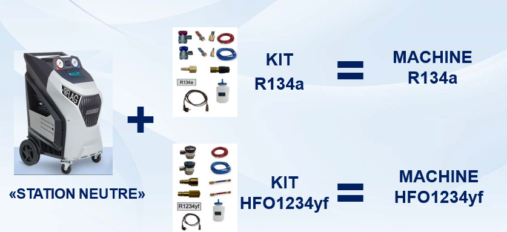
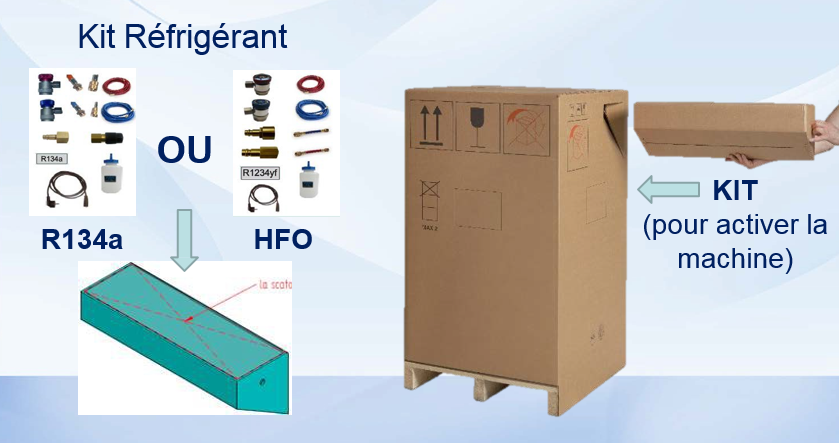
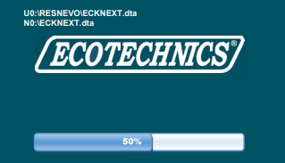
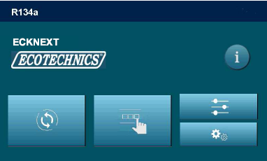
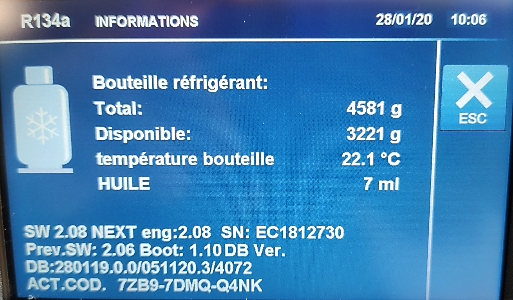
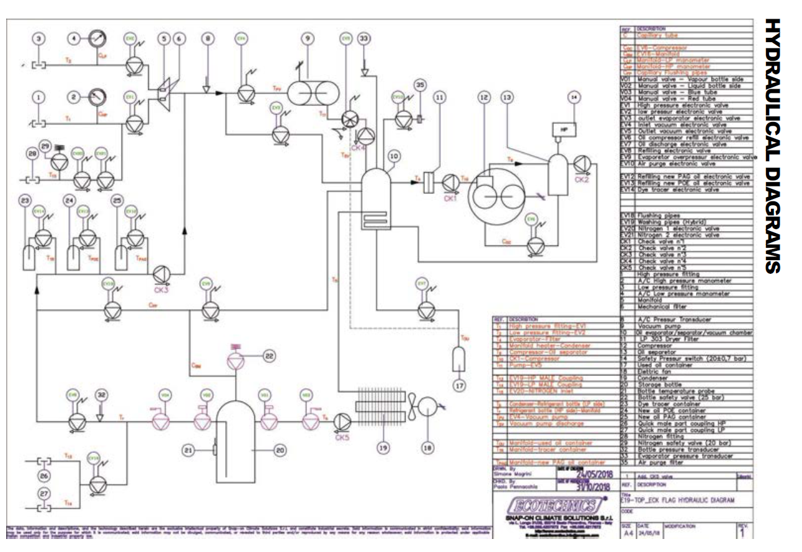

Chapitre 01 — Introduction
Station de climatisation
La station de recharge permet d'intervenir sur les circuits de climatisation en toute sécurité : récupération du réfrigérant, tirage au vide, injection d'huile, recharge constructeur. Ce module couvre les stations ECK FLAG et ECK NEXT PRO de Muller Automotive.
Gamme de stations
ECK FLAG
- ✓ Procédure automatique
- ✓ Procédure manuelle
- ✓ Configuration avancée
- ✓ Option WIFI (AC24)
- ✓ Remplissage bouteille
- ✓ Purge air manuelle
- ✓ Étalonnage intégré
ECK NEXT PRO
- ✓ Hybrid kit (rinçage flexible)
- ✓ Change huile flacon
- ✓ Analyse de gaz (option)
- ✓ Contrôle pressions A/C
- ✓ Flushing kit (rinçage véhicule)
- ✓ Diagnostic statique
- ✓ Étalonnage avancé
Cycle d'entretien complet
1
Récupération
Le compresseur de la station aspire et récupère le réfrigérant du circuit véhicule dans la bouteille interne.
2
Tirage au vide
La pompe à vide descend le circuit en dépression pour éliminer toute humidité résiduelle (min. 5 minutes).
3
Injection d'huile
Injection par dépression du circuit : huile PAG + traceur UV selon les préconisations constructeur.
4
Recharge réfrigérant
Injection de la quantité exacte préconisée par le constructeur, par pression du réfrigérant et dépression du circuit.
Documents de référence
Schéma hydraulique ECK FLAG
E19-TOP — Hydraulic Diagram
Schéma hydraulique phase/phase
ECK FLAG — étape par étape
Clim — véhicule électrique
Spécificités VE/hybride
Chapitre 02 — Configuration
Configuration de la station
Station neutre — concept

Concept "Station neutre" — une seule machine de base + kit R134a = Machine R134a, ou + kit R1234yf = Machine HFO1234yf. Solution flexible pour équiper le centre.
Activation sur site — AC24
L'activation du type de gaz se fait via le portail http://ac-service24.com/app/ (KIT WIFI disponible pour l'ECK FLAG). Sélectionner le site en anglais, télécharger la mise à jour et suivre la procédure.
Réception de la station

Vérification à la réception : composition de la station, accessoires inclus, état général et conformité de la livraison
Chapitre 03 — Mise en service
Mise en service
Mise à jour logicielle

Interface mise à jour — procédure via clé USB (2 Go min / 32 Go max, format FAT32)
1
Préparer la clé USB
Clé USB 2 Go minimum, 32 Go maximum. Formater en FAT32 avant utilisation.
2
Télécharger la mise à jour
Sélectionner le site en anglais sur ac-service24.com. Extraire le fichier téléchargé directement à la racine de la clé USB.
3
Lancer la mise à jour
Machine éteinte — insérer la clé USB. Allumer l'appareil sans toucher à la clé. Après ~3 secondes, l'écran clignote en noir et blanc.
4
Attendre la fin
Après ~50 secondes, l'écran d'activation s'affiche pour saisir le code réponse. Ne pas interrompre la procédure.
Menu démarrage rapide (QuickSetup)
🌍 LangueSélection de la langue d'interface
📏 UnitésBar / PSI — grammes / onces
🕐 Date/HeureConfiguration horodatage tickets
🖨️ En-tête ticketNom centre, N° agrément
💨 Données du videRéglage paramètres tirage au vide
🪣 RemplissageRemplissage réservoir interne
Si la procédure QuickSetup n'est pas terminée, elle s'affichera à nouveau à chaque démarrage de la station jusqu'à validation complète.
Chapitre 04 — Interface
Menus & Interface
Écrans d'accueil — 2 générations

Nouvelle génération — interface graphique avec grandes tuiles (Procédure Auto/Manuelle, Configuration, Maintenance, Données)
Ancienne génération — interface liste avec menus textuels
Menu Configuration — ECK FLAG vs ECK NEXT PRO
| Option | ECK FLAG | ECK NEXT PRO |
|---|---|---|
| Réglages du vide | ✓ | ✓ |
| Options (code 43210791) | ✓ | ✓ |
| WIFI | ✓ (KIT WIFI) | ✓ (si option) |
| Config test N2 | ✓ | — |
| Paramètres huile | ✓ | — |
| Base de données véhicules | ✓ | ✓ |
| Configuration Date/Heure | ✓ | ✓ |
| N° agrément opérateur | ✓ | ✓ |
| Code opérateur | — | ✓ |
Code Options : 43210791
Donne accès aux réglages avancés de configuration (étalonnage, options matérielles).
Donne accès aux réglages avancés de configuration (étalonnage, options matérielles).
Écran Données / Informations machine

Écran Données — informations bouteille réfrigérant en temps réel : total (4581g), disponible (3221g), température bouteille (22,1°C), huile (7ml)
Chapitre 05 — Maintenance
Maintenance station
Remplacement du filtre déshydrateur
Procédure filtre
Menu → Remplacement filtre → Suivre la procédure → Saisir le code inscrit sur le nouveau filtre pour effacer l'alarme « remplacement filtre ». Ce code supprime simultanément l'alarme filtre ET huile.
Remplacement de l'huile pompe à vide
1
Accéder au menu
Menu → Remplacement huile → Suivre la procédure affichée à l'écran.
2
Saisir le code flacon
Saisir le code inscrit sur le flacon d'huile pour effacer l'alarme « remplacer huile ». Ce code supprime uniquement l'alarme huile.
3
Vérifier le niveau
Toujours faire le niveau au milieu de l'œilleton pour un bon fonctionnement de la pompe.
Niveau d'huile critique
Trop d'huile : la pompe peine, difficulté à descendre en dépression.
Pas assez d'huile : problème pour atteindre la dépression requise. Risque d'endommagement de la pompe.
Pas assez d'huile : problème pour atteindre la dépression requise. Risque d'endommagement de la pompe.
Vérification d'étanchéité machine
1
Contrôle visuel
Vérifier l'état des flexibles et raccords rapides HP et BP (état, fissures, usure).
2
Tirage au vide 5 min
Lancer un tirage au vide minimum 5 minutes. À la fin, noter les valeurs manomètres HP et BP et le transducteur A/C.
3
Contrôle 5/10 min après
Laisser reposer 5 à 10 minutes puis comparer les valeurs. Toute remontée de pression indique une fuite.
Chapitre 06 — Étalonnage
Étalonnage de la station
Contrôle balance de gaz — tolérance 5%
Méthode de contrôle
Vérifier le poids affiché en ajoutant un poids étalon sur la bouteille. Tolérance : ±5%. Utiliser 3 ou 4 poids différents : 1 kg, 5 kg, 10 kg, 20 kg.
Exemple de calcul
Machine indique : 5,75 kg total réfrigérant
Ajout d'un poids étalon : 5 kg
Poids attendu affiché : 10,75 kg
Plage de conformité (±5%) : entre 10,50 kg et 11,00 kg
Contrôle manomètres
| Manomètre | Méthode | Tolérance |
|---|---|---|
| Basse pression (BP) | Comparaison avec manomètre digital de référence | ±0,15 bar |
| Haute pression (HP) | Injection gaz dans tuyaux + lecture comparative | ±0,35 bar |
| Zéro manomètre mécanique | Vérification du zéro à vide | Doit pointer exactement à 0 |
Ajustage des balances — code 0791
BALANCE BOUTEILLE
• Zéro sans bouteille
• Gain : 20 kg sur plateau
• Tare bouteille pleine : 5800 g (défaut)
Bouteille 12 kg : tare ≈ 6000 g
Bouteille 22 kg : tare ≈ 9000 g
• Gain : 20 kg sur plateau
• Tare bouteille pleine : 5800 g (défaut)
Bouteille 12 kg : tare ≈ 6000 g
Bouteille 22 kg : tare ≈ 9000 g
BALANCE HUILES/TRACEUR
• Zéro sans bouteille
• Gain : 100 à 200 g
• Tare si huile présente : 150 g (défaut)
100 g = 104 ml pour balances d'huiles
• Gain : 100 à 200 g
• Tare si huile présente : 150 g (défaut)
100 g = 104 ml pour balances d'huiles
Ajustage capteurs de pression et de température
| Capteur | Condition requise | Procédure |
|---|---|---|
| Transducteur pression bouteille | Étalonnage A/C fait + min 1000 g réfrigérant | Procédure automatique → valider les étapes |
| Transducteur pression évaporateur | Étalonnage A/C fait + min 1000 g réfrigérant | Procédure automatique → valider les étapes |
| Capteurs température | — | Saisir T° bouteille mesurée + T° ambiante mesurée |
Chapitre 07 — Diagnostic
Résolution de pannes
Fumée blanche — tirage au vide
La fumée blanche en sortie de pompe à vide ou bouteille d'huile usagée = vapeur d'eau froide. Indique une probable aspiration d'air.
- Vérifier valeurs manomètres HP et BP (doivent être en dépression ±−0,9 bar)
- Si non : présence d'une prise d'air — comparer avec capteur A/C si disponible
- Faire fonctionner la station à vide (sans véhicule) pour isoler la fuite
- Contrôler état des tuyaux (poreux ?), serrage des raccords
- Contrôler état des raccords rapides HP et BP
- Si défaut persiste → fuite interne à la machine (SAV)
Problème phase de récupération
- Problème d'entretien — filtre(s) bouché(s)
- Prise d'air dans le circuit (récupération longue)
- Bouteille interne pleine ou pression trop élevée
- Problème d'ouverture d'une électrovanne
- Problème compresseur interne station
Problème compresseur station
- Vérifier la présence du 220V en entrée compresseur (pendant récupération de gaz)
- Si pas de tension → contrôler le pressostat de surpression (branché en série, contact NC) — peut afficher «alarme surpression»
- Si compresseur très chaud et ne tourne pas → probablement hors service
- Si compresseur tremble mais récupération très longue → faire un contrôle de pression sortie compresseur
- ⚠ Ne pas dépasser 30 bar lors du test — décharger dès 20 bar. Pression inférieure à 20 bar = compresseur HS
Message — Ventilateur bloqué
- Ce message concerne le ventilateur du condenseur de la station
- Vérifier que le ventilateur tourne physiquement
- Mesurer la tension en sortie d'alimentation
- Réglage à 12,2V par le trimmer situé sur l'alimentation (si réglable)
Chapitre 08 — SAV
Schéma hydraulique
Test actionneur — SAV expérimenté uniquement
Ce test permet de commander chaque élément individuellement ou tous simultanément. À utiliser avec le schéma hydraulique en parallèle pour suivre le cheminement du gaz dans la machine.
Schéma hydraulique ECK FLAG

Schéma hydraulique complet ECK FLAG — tous les composants (compresseur, électrovannes, séparateur d'huile, bouteille, pompe à vide, condenseur) et leurs interconnexions
Lecture du schéma — étape par étape
1
Phase récupération
Ouverture EV BP et HP côté véhicule → le compresseur aspire le réfrigérant → passage par le séparateur d'huile → bouteille interne.
2
Phase tirage au vide
La pompe à vide est activée → descente en dépression du circuit véhicule via les flexibles HP et BP.
3
Phase injection
EV huile et traceur s'ouvrent → injection par dépression. EV réfrigérant → recharge par pression de la bouteille interne.
Documents hydrauliques disponibles
Les schémas hydrauliques complets ECK FLAG (standard et phase par phase) sont disponibles dans l'onglet Introduction → Documents.
Chapitre 09 — Révision
Flashcards — mémorisation
Cliquez sur chaque carte pour révéler la réponse.
Code d'accès aux options avancées des stations ?
Cliquez pour révéler
43210791
Code commun ECK FLAG et ECK NEXT PRO pour accéder aux options de configuration avancées.
Tolérance balance de gaz lors de l'étalonnage ?
Cliquez pour révéler
±5%
Vérification avec 3 ou 4 poids différents : 1 kg, 5 kg, 10 kg, 20 kg.
Tolérance manomètre basse pression ?
Cliquez pour révéler
±0,15 bar
Tolérance HP : ±0,35 bar. Les manomètres sont contrôlés par comparaison avec un manomètre digital de référence.
Niveau d'huile pompe à vide — où faire le niveau ?
Cliquez pour révéler
Au milieu de l'œilleton
Trop d'huile → pompe peine. Pas assez → problème de dépression. Le niveau exact au milieu est impératif.
Que signifie la fumée blanche en sortie de pompe à vide ?
Cliquez pour révéler
Vapeur d'eau froide — aspiration d'air
Indique une prise d'air. Rechercher dans les flexibles, raccords rapides HP/BP, ou interne machine.
Pression max lors du test compresseur (sortie) ?
Cliquez pour révéler
Ne pas dépasser 30 bar — décharger dès 20 bar
Si pression mesurée inférieure à 20 bar → compresseur hors service.
Durée minimale du tirage au vide pour vérification étanchéité ?
Cliquez pour révéler
5 minutes minimum
Puis laisser reposer 5 à 10 minutes et comparer les valeurs lues pour détecter toute remontée de pression.
Code d'ajustage des balances ?
Cliquez pour révéler
Code 0791
Accès à l'ajustage balance bouteille (zéro, gain 20kg, tare) et balance huiles (zéro, gain 100-200g, tare).
Chapitre 10 — Évaluation
QCM Final
Question 1 / 9
0/9
Résultat